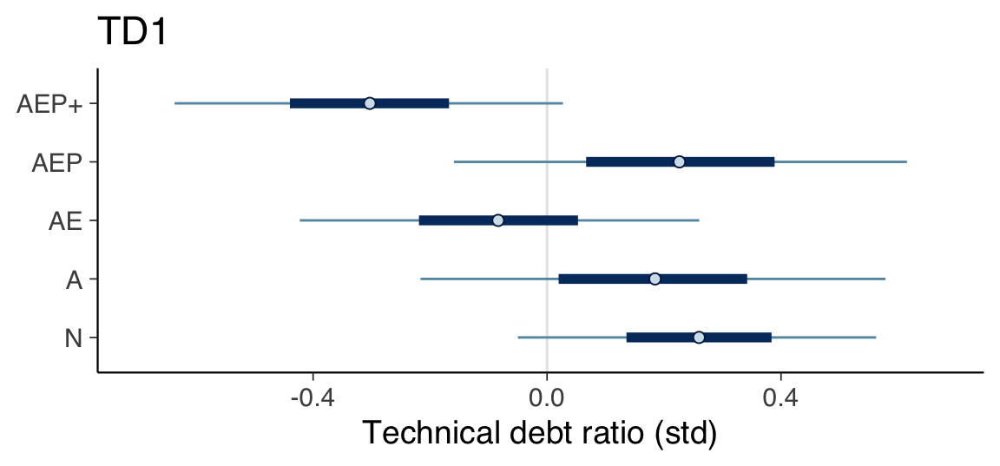
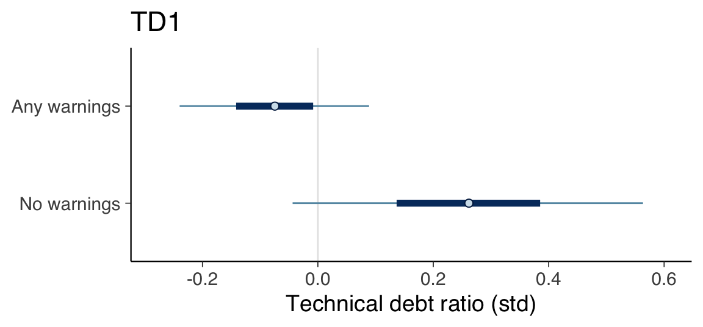
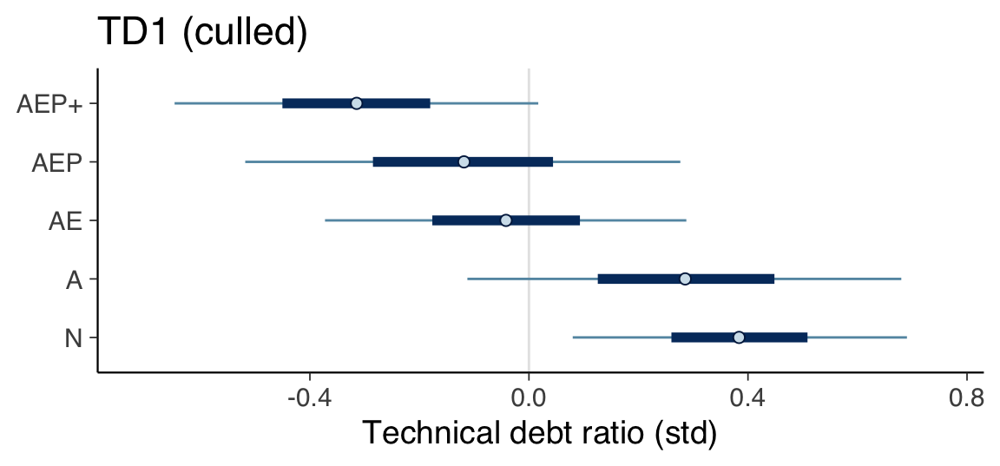
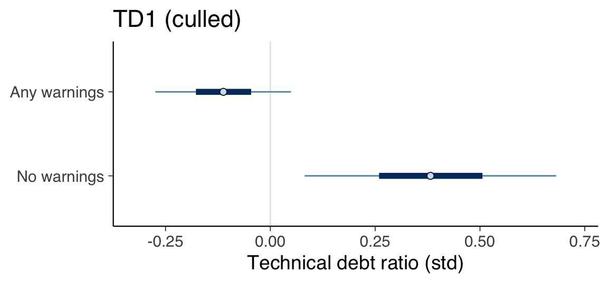

Chapter 15 Technical Debt Ratio
This section covers the analysis relating to the technical debt ratio metric.
15.1 Prepare data
model_seed <- 20230302
create_tech_debt_data <- function(data) {
list(
tech_debt_std=scale(data$sqale_debt_ratio),
contributors_std=scale(data$contributors),
stars_std=scale(data$stars),
age_std=scale(get_age(data$created_at)),
files_std=scale(data$files),
size_std=scale(data$loc)
)
}
data <- create_tech_debt_data(df)
data$category <- factor(df$category)
data_factor_uses_warnings <- create_tech_debt_data(df)
data_factor_uses_warnings$category <- factor(uses_warnings(df$category))15.2 Define Models
15.2.1 TD1
fit_model_td1 <- function(name, data) {
fit_model(name,
"tech_debt_std ~ 0 + category",
c(
prior(normal(0, 1), class=b),
prior(exponential(1), class=sigma)
),
data,
model_seed)
}
td1 <- fit_model_td1("td1", data)15.2.2 TD2
fit_model_td2 <- function(name, data) {
fit_model(name,
"tech_debt_std ~ 0 + category + files_std",
c(
prior(normal(0, 1), class=b),
prior(normal(0, 1), class=b, coef="files_std"),
prior(exponential(1), class=sigma)
),
data,
model_seed)
}
td2 <- fit_model_td2("td2", data)15.2.3 TD3
fit_model_td3 <- function(name, data) {
fit_model(name,
"tech_debt_std ~ 0 + category + contributors_std",
c(
prior(normal(0, 1), class=b),
prior(normal(0, 1), class=b, coef="contributors_std"),
prior(exponential(1), class=sigma)
),
data,
model_seed)
}
td3 <- fit_model_td3("td3", data)15.2.4 TD4
fit_model_td4 <- function(name, data) {
fit_model(name,
"tech_debt_std ~ 0 + category + size_std",
c(
prior(normal(0, 1), class=b),
prior(normal(0, 1), class=b, coef="size_std"),
prior(exponential(1), class=sigma)
),
data,
model_seed)
}
td4 <- fit_model_td4("td4", data)15.2.5 TD5
fit_model_td5 <- function(name, data) {
fit_model(name,
"tech_debt_std ~ 0 + category + age_std",
c(
prior(normal(0, 1), class=b),
prior(normal(0, 1), class=b, coef="age_std"),
prior(exponential(1), class=sigma)
),
data,
model_seed)
}
td5 <- fit_model_td5("td5", data)15.2.6 TD6
fit_model_td6 <- function(name, data) {
fit_model(name,
"tech_debt_std ~ 0 + category + stars_std",
c(
prior(normal(0, 1), class=b),
prior(normal(0, 1), class=b, coef="stars_std"),
prior(exponential(1), class=sigma)
),
data,
model_seed)
}
td6 <- fit_model_td6("td6", data)15.2.7 TD7
fit_model_td7 <- function(name, data) {
fit_model(name,
"tech_debt_std ~ 0 + category + contributors_std + files_std",
c(
prior(normal(0, 1), class=b),
prior(normal(0, 1), class=b, coef="contributors_std"),
prior(normal(0, 1), class=b, coef="files_std"),
prior(exponential(1), class=sigma)
),
data,
model_seed)
}
td7 <- fit_model_td7("td7", data)15.2.8 TD8
fit_model_td8 <- function(name, data) {
fit_model(name,
"tech_debt_std ~ 0 + category + contributors_std + stars_std",
c(
prior(normal(0, 1), class=b),
prior(normal(0, 1), class=b, coef="contributors_std"),
prior(normal(0, 1), class=b, coef="stars_std"),
prior(exponential(1), class=sigma)
),
data,
model_seed)
}
td8 <- fit_model_td8("td8", data)15.3 Compare models
td1 <- add_criterion(td1, "loo", moment_match=TRUE)
td2 <- add_criterion(td2, "loo", moment_match=TRUE)
td3 <- add_criterion(td3, "loo", moment_match=TRUE)
td4 <- add_criterion(td4, "loo", moment_match=TRUE)
td5 <- add_criterion(td5, "loo", moment_match=TRUE)
td6 <- add_criterion(td6, "loo", moment_match=TRUE)
td7 <- add_criterion(td7, "loo", moment_match=TRUE)
td8 <- add_criterion(td8, "loo", moment_match=TRUE)
print(loo_compare(td1, td2, td3, td4, td5, td6, td7, td8, criterion="loo"),
simplify=FALSE)## elpd_diff se_diff elpd_loo se_elpd_loo p_loo se_p_loo looic se_looic
## td3 0.0 0.0 -190.2 27.8 15.6 9.0 380.3 55.6
## td2 0.0 1.2 -190.2 28.1 15.5 9.0 380.3 56.3
## td1 -0.2 1.2 -190.4 28.4 15.0 9.1 380.7 56.8
## td4 -0.2 0.8 -190.4 27.8 15.6 8.9 380.8 55.7
## td7 -0.4 0.7 -190.6 27.7 16.3 9.1 381.2 55.3
## td6 -0.6 0.9 -190.8 28.1 15.4 9.1 381.5 56.2
## td8 -0.7 0.3 -190.8 27.6 15.9 9.0 381.6 55.1
## td5 -1.2 1.6 -191.3 28.6 16.1 9.4 382.7 57.215.4 Determine natural scale values
summary(td1)## Family: gaussian
## Links: mu = identity; sigma = identity
## Formula: tech_debt_std ~ 0 + category
## Data: data (Number of observations: 127)
## Draws: 4 chains, each with iter = 10000; warmup = 5000; thin = 1;
## total post-warmup draws = 20000
##
## Population-Level Effects:
## Estimate Est.Error l-95% CI u-95% CI Rhat Bulk_ESS Tail_ESS
## category1 0.26 0.19 -0.10 0.62 1.00 40959 14961
## category2 0.18 0.24 -0.30 0.66 1.00 41129 15985
## category3 -0.08 0.21 -0.49 0.33 1.00 41392 14620
## category4 -0.21 0.45 -1.10 0.68 1.00 40386 14878
## category5 0.23 0.24 -0.23 0.68 1.00 41390 15553
## category6 -0.17 0.33 -0.83 0.50 1.00 40790 14542
## category7 -0.30 0.20 -0.70 0.09 1.00 41666 14535
## category8 -0.15 0.69 -1.50 1.24 1.00 41612 15602
## category9 -0.30 0.70 -1.68 1.10 1.00 35900 14973
## category10 -0.30 0.51 -1.29 0.70 1.00 40784 15183
## category11 -0.19 0.70 -1.56 1.18 1.00 42980 15626
##
## Family Specific Parameters:
## Estimate Est.Error l-95% CI u-95% CI Rhat Bulk_ESS Tail_ESS
## sigma 1.01 0.07 0.89 1.14 1.00 33325 15600
##
## Draws were sampled using sampling(NUTS). For each parameter, Bulk_ESS
## and Tail_ESS are effective sample size measures, and Rhat is the potential
## scale reduction factor on split chains (at convergence, Rhat = 1).print(create_natural_scale_summary_df(td1, df$sqale_debt_ratio))## Mean SD 0.05 CI 0.95 CI
## N 2.16 2.06 1.74 2.57
## A 2.05 2.13 1.51 2.59
## AE 1.70 2.09 1.24 2.16
## AEP 2.12 2.13 1.59 2.65
## AEP+ 1.40 2.08 0.94 1.8515.5 Intervals of major categories
plot_intervals_of_major_categories(td1) +
labs(title="TD1", x="Technical debt ratio (std)")
15.6 Warnings versus no warnings
td1_factor_uses_warnings <- fit_model_td1("td1_factor_uses_warnings", data_factor_uses_warnings)
plot_intervals_of_categories(td1_factor_uses_warnings) +
labs(title="TD1", x="Technical debt ratio (std)") +
scale_y_discrete(labels=c(
"b_category1"="No warnings",
"b_category2"="Any warnings"
))
15.7 Without outliers
df_culled <- df
df_culled <- df_culled[df_culled$name != "clipp",]
culled_data <- create_tech_debt_data(df_culled)
culled_data$category <- factor(df_culled$category)
td1_culled <- fit_model_td1("td1_no_outliers", culled_data)
summary(td1_culled)## Family: gaussian
## Links: mu = identity; sigma = identity
## Formula: tech_debt_std ~ 0 + category
## Data: data (Number of observations: 126)
## Draws: 4 chains, each with iter = 10000; warmup = 5000; thin = 1;
## total post-warmup draws = 20000
##
## Population-Level Effects:
## Estimate Est.Error l-95% CI u-95% CI Rhat Bulk_ESS Tail_ESS
## category1 0.38 0.19 0.02 0.75 1.00 42679 14675
## category2 0.29 0.24 -0.19 0.76 1.00 42739 14048
## category3 -0.04 0.20 -0.44 0.35 1.00 44436 14018
## category4 -0.21 0.44 -1.06 0.66 1.00 44171 14371
## category5 -0.12 0.24 -0.59 0.35 1.00 41757 14359
## category6 -0.15 0.34 -0.81 0.52 1.00 43307 14328
## category7 -0.31 0.20 -0.71 0.08 1.00 44718 14456
## category8 -0.15 0.70 -1.53 1.24 1.00 42255 14356
## category9 -0.34 0.70 -1.73 1.05 1.00 39714 13798
## category10 -0.32 0.50 -1.31 0.66 1.00 44622 14541
## category11 -0.20 0.70 -1.58 1.16 1.00 45338 15277
##
## Family Specific Parameters:
## Estimate Est.Error l-95% CI u-95% CI Rhat Bulk_ESS Tail_ESS
## sigma 1.00 0.07 0.88 1.13 1.00 36024 14614
##
## Draws were sampled using sampling(NUTS). For each parameter, Bulk_ESS
## and Tail_ESS are effective sample size measures, and Rhat is the potential
## scale reduction factor on split chains (at convergence, Rhat = 1).print(create_natural_scale_summary_df(td1_culled, df_culled$sqale_debt_ratio))## Mean SD 0.05 CI 0.95 CI
## N 2.15 1.94 1.82 2.49
## A 2.05 2.00 1.61 2.48
## AE 1.69 1.95 1.33 2.05
## AEP 1.60 2.00 1.16 2.04
## AEP+ 1.39 1.95 1.02 1.76plot_intervals_of_major_categories(td1_culled) +
labs(title="TD1 (culled)", x="Technical debt ratio (std)")
culled_data_factor_uses_warnings <- create_tech_debt_data(df_culled)
culled_data_factor_uses_warnings$category <- factor(uses_warnings(df_culled$category))
td1_culled_factor_uses_warnings <-
fit_model_td1("td1_data_no_outliers_factor_uses_warnings",
culled_data_factor_uses_warnings)
plot_intervals_of_categories(td1_culled_factor_uses_warnings) +
labs(title="TD1 (culled)", x="Technical debt ratio (std)") +
scale_y_discrete(labels=c(
"b_category1"="No warnings",
"b_category2"="Any warnings"
))